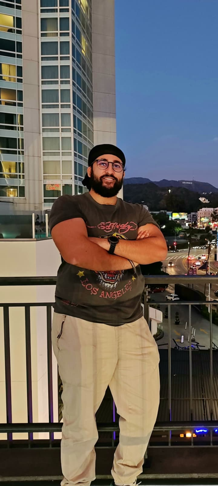

Rajan Singh
Founder & Software Developer
Fateh, I'm Rajan. I'm a 23-year-old software developer and the founder of S3D Systems, where I build custom software, websites, automation tools, 3D models and drone media projects.
I built Sangat Works because I believe technology should be used to solve real community problems. The goal is simple: make it easier for Sikhs to find, trust and support one another.
I'm also building SayVah, a direct seva app designed to help connect volunteers, Gurdwaras and people who need support.